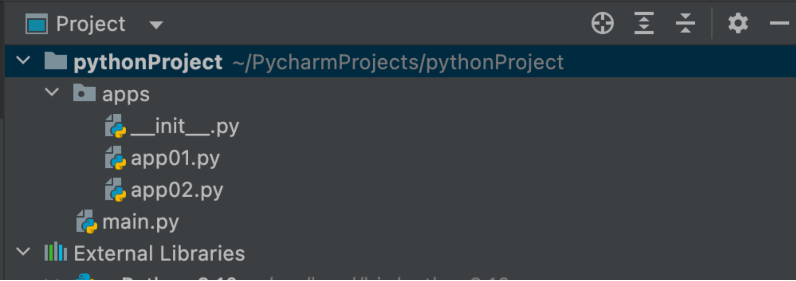
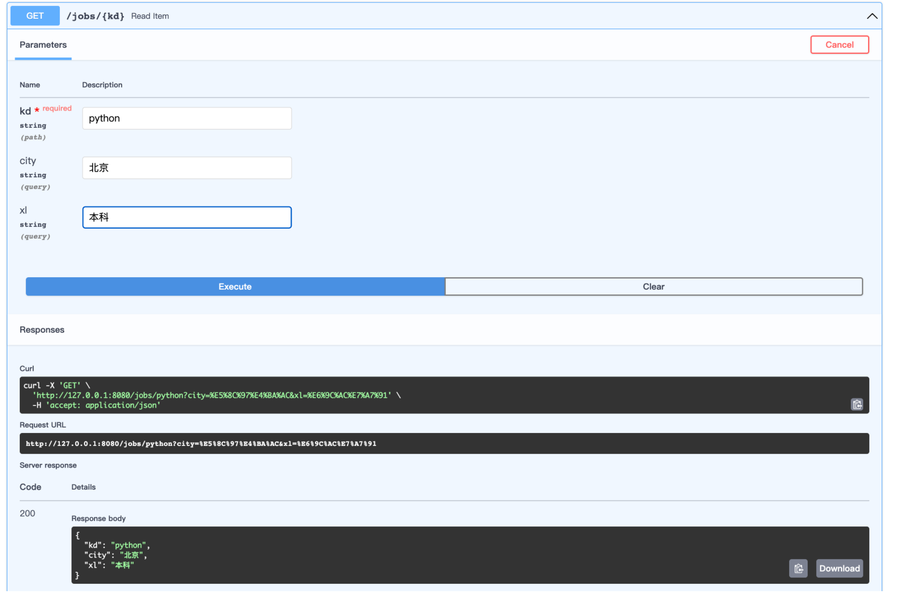
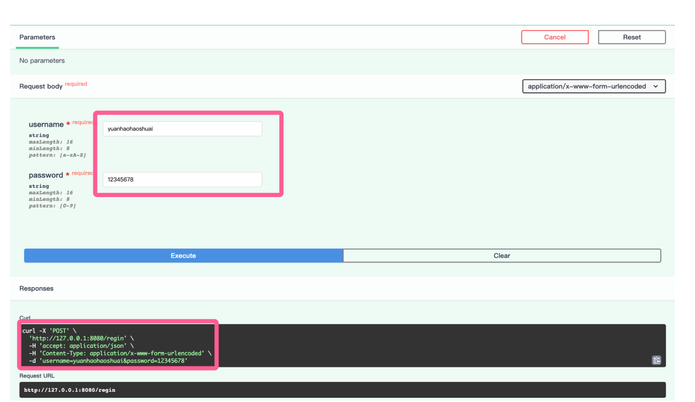
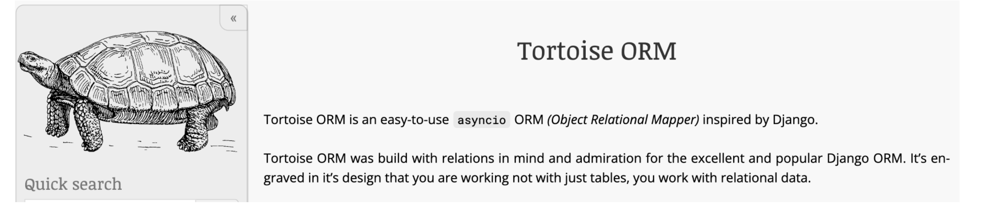
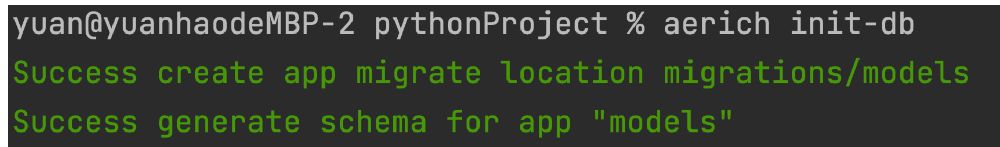
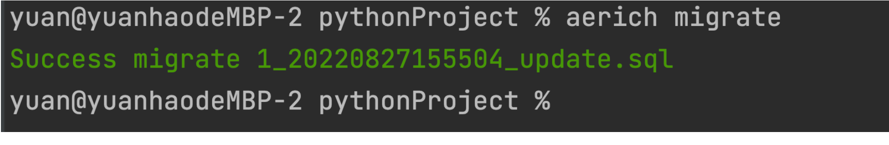
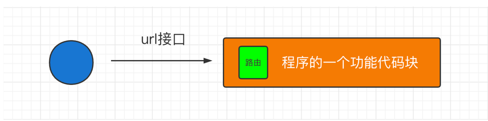
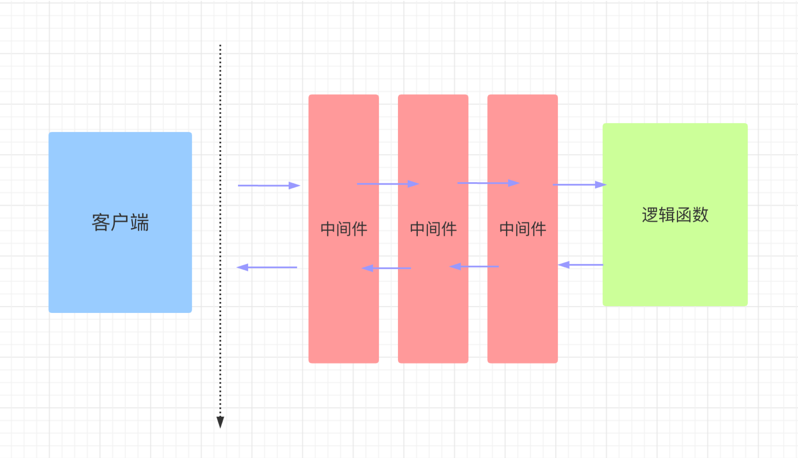

FastApi学习
概述
<font style="color:rgb(51, 51, 51);background-color:rgb(243, 244, 244);">fastapi</font>，一个用于构建 API 的现代、快速（高性能）的web框架。
<font style="color:rgb(51, 51, 51);background-color:rgb(243, 244, 244);">fastapi</font>是建立在Starlette和Pydantic基础上的，Pydantic是一个基于Python类型提示来定义数据验证、序列化和文档的库。Starlette是一种轻量级的ASGI框架/工具包，是构建高性能Asyncio服务的理性选择。
- 快速：可与 NodeJS 和 Go 比肩的
<font style="color:rgb(119, 119, 119);background-color:rgb(243, 244, 244);">极高性能</font>（归功于 <font style="color:rgb(119, 119, 119);background-color:rgb(243, 244, 244);">Starlette</font> 和 <font style="color:rgb(119, 119, 119);background-color:rgb(243, 244, 244);">Pydantic</font>），是最快的 Python web 框架之一。
- 高效编码：提高功能开发速度约 200％ 至 300％。
- 更少bug：减少约 40％ 的人为（开发者）导致错误。
- 智能：极佳的编辑器支持。处处皆可自动补全，减少调试时间。
- 简单：设计的
<font style="color:rgb(119, 119, 119);background-color:rgb(243, 244, 244);">易于使用和学习</font>，阅读文档的时间更短。
- 简短：使代码重复最小化。通过不同的参数声明实现丰富功能。
- 健壮：生产可用级别的代码。还有
<font style="color:rgb(119, 119, 119);background-color:rgb(243, 244, 244);">自动生成的交互式文档</font>。
依赖：Python 3.6 及更高版本，FastAPI 站在以下巨人的肩膀之上
Starlette 负责 web 部分(Asyncio)
Pydantic 负责数据部分(类型提示)
FastApi是站在前人肩膀上，集成了多种框架的优点的新秀框架。它出现的比较晚，2018年底才发布在github上。广泛应用于当前各种前后端分离的项目开发，测试运维自动化以及微服务的场景中。
quick start
简单案例
安装
你还会需要一个 ASGI 服务器，生产环境可以使用 Uvicorn
代码
| Python |
|---|
| from fastapi import FastAPI # FastAPI 是一个为你的 API 提供了所有功能的 Python 类。
app = FastAPI() # 这个实例将是创建你所有 API 的主要交互对象。这个 app 同样在如下命令中被 uvicorn 所引用
@app.get("/")
async def root():
return {"message": "Hello yuan"}
|
通过以下命令运行服务器：
uvicorn main:app --reload
| Python |
|---|
| INFO: Uvicorn running on http://127.0.0.1:8000 (Press CTRL+C to quit)
INFO: Started reloader process [73408]
INFO: Started server process [73408]
INFO: Waiting for application startup
INFO: Application startup complete
|
也可以直接运行：
| Python |
|---|
| if __name__ == '__main__':
import uvicorn
uvicorn.run("main:app", host="127.0.0.1", port=8080, debug=True, reload=True)
|
（1）导入 FastAPI。（2）创建一个 app 实例。（3）编写一个路径操作装饰器（如 @app.get("/")）。（4）编写一个路径操作函数（如上面的 def root(): ...）（5）定义返回值（6）运行开发服务器（如 uvicorn main:app --reload）
此外，fastapi有着非常棒的交互式 API 文档，这一点很吸引人。
跳转到 http://127.0.0.1:8080/docs。你将会看到自动生成的交互式 API 文档。
路径操作
路径操作装饰器
fastapi支持各种请求方式：
| Python |
|---|
| @app.get()
@app.post()
@app.put()
@app.patch()
@app.delete()
@app.options()
@app.head()
@app.trace()
|
| Python |
|---|
| from typing import Union
from fastapi import FastAPI
app = FastAPI()
@app.get("/get")
def get_test():
return {"method": "get方法"}
@app.post("/post")
def post_test():
return {"method": "post方法"}
@app.put("/put")
def put_test():
return {"method": "put方法"}
@app.delete("/delete")
def delete_test():
return {"method": "delete方法"}
|

路径操作装饰器参数：
| Python |
|---|
| @app.post(
"/items/{item_id}",
response_model=Item,
status_code=status.HTTP_200_OK,
tags=["AAA"],
summary="this is summary",
description="this is description",
response_description= "this is response_description",
deprecated=False,
)
|
include_router
main.py
| Python |
|---|
| from typing import Union
from fastapi import FastAPI
import uvicorn
from apps import app01, app02
app = FastAPI()
app.include_router(app01, prefix="/app01", tags=["第一章节：商城接口", ])
app.include_router(app02, prefix="/app02", tags=["第二章节：用户中心接口", ])
if __name__ == '__main__':
uvicorn.run("main:app", host="127.0.0.1", port=8080, debug=True, reload=True)
|
与main.py同级目录apps：
| Python |
|---|
| # __init__.py
from .app01 import app01
from .app02 import app02
|
| Python |
|---|
| from fastapi import APIRouter
app01 = APIRouter()
@app01.get("/shop/food")
def shop_food():
return {"shop": "food"}
@app01.get("/shop/bed")
def shop_food():
return {"shop": "bed"}
|
| Python |
|---|
| from fastapi import APIRouter
app02 = APIRouter()
@app02.post("/user/login")
def user_login():
return {"user": "login"}
@app02.post("/user/reg")
def user_reg():
return {"user": "reg"}
|

请求与响应
4.1、路径参数
（1）基本用法
以使用与 Python 格式化字符串相同的语法来声明路径"参数"或"变量"：
| Python |
|---|
| @app.get("/user/{user_id}")
def get_user(user_id):
print(user_id, type(user_id))
return {"user_id": user_id}
|
路径参数 <font style="color:rgb(51, 51, 51);background-color:rgb(243, 244, 244);">user_id</font> 的值将作为参数 <font style="color:rgb(51, 51, 51);background-color:rgb(243, 244, 244);">user_id</font> 传递给你的函数。
（2）有类型的路径参数
你可以使用标准的 Python 类型标注为函数中的路径参数声明类型。
| Python |
|---|
| @app.get("/user/{user_id}")
def get_user(user_id: int):
print(user_id, type(user_id))
return {"user_id": user_id}
|
在这个例子中，<font style="color:rgb(51, 51, 51);background-color:rgb(243, 244, 244);">user_id</font> 被声明为 <font style="color:rgb(51, 51, 51);background-color:rgb(243, 244, 244);">int</font> 类型。
这将为你的函数提供编辑器支持，包括错误检查、代码补全等等。
（3）注意顺序
在创建路径操作时，你会发现有些情况下路径是固定的。
比如 <font style="color:rgb(51, 51, 51);background-color:rgb(243, 244, 244);">/users/me</font>，我们假设它用来获取关于当前用户的数据.
然后，你还可以使用路径 <font style="color:rgb(51, 51, 51);background-color:rgb(243, 244, 244);">/user/{username}</font> 来通过用户名 获取关于特定用户的数据。
由于路径操作是按顺序依次运行的，你需要确保路径 <font style="color:rgb(51, 51, 51);background-color:rgb(243, 244, 244);">/user/me</font> 声明在路径 <font style="color:rgb(51, 51, 51);background-color:rgb(243, 244, 244);">/user/{username}</font>之前：
| Python |
|---|
| @app.get("/user/me")
async def read_user_me():
return {"username": "the current user"}
@app.get("/user/{username}")
async def read_user(username: str):
return {"username": username}
|
否则，<font style="color:rgb(51, 51, 51);background-color:rgb(243, 244, 244);">/user/{username}</font> 的路径还将与 <font style="color:rgb(51, 51, 51);background-color:rgb(243, 244, 244);">/user/me</font> 相匹配，"认为"自己正在接收一个值为 <font style="color:rgb(51, 51, 51);background-color:rgb(243, 244, 244);">"me"</font> 的 <font style="color:rgb(51, 51, 51);background-color:rgb(243, 244, 244);">username</font> 参数。
4.2、查询参数（请求参数）
路径函数中声明不属于路径参数的其他函数参数时，它们将被自动解释为"查询字符串"参数，就是 url? 之后用<font style="color:rgb(51, 51, 51);background-color:rgb(243, 244, 244);">&</font>分割的 key-value 键值对。
| Python |
|---|
| @app.get("/jobs/{kd}")
async def search_jobs(kd: str, city: Union[str, None] = None, xl: Union[str, None] = None): # 有默认值即可选，否则必选
if city or xl:
return {"kd": kd, "city": city, "xl": xl}
return {"kd": kd}
|

在这个例子中，函数参数 <font style="color:rgb(51, 51, 51);background-color:rgb(243, 244, 244);">city</font>和<font style="color:rgb(51, 51, 51);background-color:rgb(243, 244, 244);">xl</font> 是可选的，并且默认值为 <font style="color:rgb(51, 51, 51);background-color:rgb(243, 244, 244);">None</font>。
自python3.5开始，PEP484为python引入了类型注解(type hints)，typing的主要作用有：
- 类型检查，防止运行时出现参数、返回值类型不符。
- 作为开发文档附加说明，方便使用者调用时传入和返回参数类型。
- 模块加入不会影响程序的运行不会报正式的错误，pycharm支持typing检查错误时会出现黄色警告。
<font style="color:rgb(51, 51, 51);background-color:rgb(243, 244, 244);">type hints</font>主要是要指示函数的输入和输出的数据类型，数据类型在typing 包中，基本类型有str list dict等等，
Union 是当有多种可能的数据类型时使用，比如函数有可能根据不同情况有时返回str或返回list，那么就可以写成Union[list, str]Optional 是Union的一个简化， 当 数据类型中有可能是None时，比如有可能是str也有可能是None，则Optional[str], 相当于Union[str, None]
4.3、请求体数据
当你需要将数据从客户端（例如浏览器）发送给 API 时，你将其作为「请求体」发送。请求体是客户端发送给 API 的数据。响应体是 API 发送给客户端的数据。
FastAPI 基于 <font style="color:rgb(51, 51, 51);background-color:rgb(243, 244, 244);">Pydantic</font> ，<font style="color:rgb(51, 51, 51);background-color:rgb(243, 244, 244);">Pydantic</font> 主要用来做类型强制检查（校验数据）。不符合类型要求就会抛出异常。
对于 API 服务，支持类型检查非常有用，会让服务更加健壮，也会加快开发速度，因为开发者再也不用自己写一行一行的做类型检查。
安装上手<font style="color:rgb(51, 51, 51);background-color:rgb(243, 244, 244);">pip install pydantic</font>
| Python |
|---|
| from typing import Union, List, Optional
from fastapi import FastAPI
from pydantic import BaseModel, Field, ValidationError, validator
import uvicorn
from datetime import date
class Addr(BaseModel):
province: str
city: str
class User(BaseModel):
name = 'root'
age: int = Field(default=0, lt=100, gt=0)
birth: Optional[date] = None
friends: List[int] = []
description: Union[str, None] = None
# addr: Union[Addr, None] = None # 类型嵌套
@validator('name')
def name_must_alpha(cls, v):
assert v.isalpha(), 'name must be alpha'
return v
class Data(BaseModel): # 类型嵌套
users: List[User]
app = FastAPI()
@app.post("/data/")
async def create_data(data: Data):
# 添加数据库
return data
if __name__ == '__main__':
try:
User(name="",...)
except ValidationError as e:
print(e.json())
|
测试：
| Python |
|---|
| {
"name": "rain",
"age": 32,
"birth": "2022-09-29",
"friends": [],
"description": "最帅的讲fastapi的老师"
}
|
和声明查询参数时一样，当一个模型属性具有默认值时，它不是必需的。否则它是一个必需属性。将默认值设为 <font style="color:rgb(51, 51, 51);background-color:rgb(243, 244, 244);">None</font> 可使其成为可选属性。
FastAPI 会自动将定义的模型类转化为<font style="color:rgb(51, 51, 51);background-color:rgb(243, 244, 244);">JSON Schema</font>，Schema 成为 OpenAPI 生成模式的一部分，并显示在 API 交互文档中，查看 API 交互文档如下，该接口将接收<font style="color:rgb(51, 51, 51);background-color:rgb(243, 244, 244);">application/json</font>类型的参数。
FastAPI 支持同时定义 Path 参数、Query 参数和请求体参数，FastAPI 将会正确识别并获取数据。
参数在 url 中也声明了，它将被解释为 path 参数
参数是单一类型（例如int、float、str、bool等），它将被解释为 query 参数
参数类型为继承 Pydantic 模块的<font style="color:rgb(119, 119, 119);background-color:rgb(243, 244, 244);">BaseModel</font>类的数据模型类，则它将被解释为请求体参数
在 OAuth2 规范的一种使用方式（密码流）中，需要将用户名、密码作为表单字段发送，而不是 JSON。
FastAPI 可以使用Form组件来接收表单数据，需要先使用<font style="color:rgb(51, 51, 51);background-color:rgb(243, 244, 244);">pip install python-multipart</font>命令进行安装。
pip install python-multipart
| Python |
|---|
| from fastapi import FastAPI, Form
app = FastAPI()
@app.post("/regin")
def regin(username: str = Form(..., max_length=16, min_length=8, regex='[a-zA-Z]'),
password: str = Form(..., max_length=16, min_length=8, regex='[0-9]')):
print(f"username:{username},password:{password}")
return {"username": username}
|

4.5、文件上传
| Python |
|---|
| from fastapi import FastAPI, File, UploadFile
from typing import List
app = FastAPI()
# file: bytes = File()：适合小文件上传
@app.post("/files/")
async def create_file(file: bytes = File()):
print("file:", file)
return {"file_size": len(file)}
@app.post("/multiFiles/")
async def create_files(files: List[bytes] = File()):
return {"file_sizes": [len(file) for file in files]}
# file: UploadFile：适合大文件上传
@app.post("/uploadFile/")
async def create_upload_file(file: UploadFile):
with open(f"{file.filename}", 'wb') as f:
for chunk in iter(lambda: file.file.read(1024), b''):
f.write(chunk)
return {"filename": file.filename}
@app.post("/multiUploadFiles/")
async def create_upload_files(files: List[UploadFile]):
return {"filenames": [file.filename for file in files]}
|
4.6、Reqeust对象
有些情况下我们希望能直接访问Request对象。例如我们在路径操作函数中想获取客户端的IP地址，需要在函数中声明Request类型的参数，FastAPI 就会自动传递 Request 对象给这个参数，我们就可以获取到 Request 对象及其属性信息，例如 header、url、cookie、session 等。
| Python |
|---|
| from fastapi import Request
@app.get("/items")
async def items(request: Request):
return {
"请求URL：": request.url,
"请求ip：": request.client.host,
"请求宿主：": request.headers.get("user-agent"),
"cookies": request.cookies,
}
|
4.7、请求静态文件
在 Web 开发中，需要请求很多静态资源文件（不是由服务器生成的文件），如 css/js 和图片文件等。
| Python |
|---|
| from fastapi.staticfiles import StaticFiles
app = FastAPI()
app.mount("/static",StaticFiles(directory="static"))
|
4.8、响应模型相关参数
（1）response_model
前面写的这么多路径函数最终 return 的都是自定义结构的字典，FastAPI 提供了 response_model 参数，声明 return 响应体的模型
| Python |
|---|
| # 路径操作
@app.post("/items/", response_model=Item)
# 路径函数
async def create_item(item: Item):
...
|
response_model 是路径操作的参数，并不是路径函数的参数哦
FastAPI将使用<font style="color:rgb(51, 51, 51);background-color:rgb(243, 244, 244);">response_model</font>进行以下操作：
- 将输出数据转换为response_model中声明的数据类型。
- 验证数据结构和类型
- 将输出数据限制为该model定义的
- 添加到OpenAPI中
- 在自动文档系统中使用。
你可以在任意的路径操作中使用 <font style="color:rgb(51, 51, 51);background-color:rgb(243, 244, 244);">response_model</font> 参数来声明用于响应的模型
案例：
- 注册功能
- 输入账号、密码、昵称、邮箱，注册成功后返回个人信息
| Python |
|---|
| from typing import Union
from fastapi import FastAPI
from pydantic import BaseModel, EmailStr
app = FastAPI()
class UserIn(BaseModel):
username: str
password: str
email: EmailStr
full_name: Union[str, None] = None
class UserOut(BaseModel):
username: str
email: EmailStr
full_name: Union[str, None] = None
@app.post("/user/", response_model=UserOut)
async def create_user(user: UserIn):
return user
|

（2）response_model_exclude_unset
通过上面的例子，我们学到了如何用response_model控制响应体结构，但是如果它们实际上没有存储，则可能要从结果中忽略它们。例如，如果model在NoSQL数据库中具有很多可选属性，但是不想发送很长的JSON响应，其中包含默认值。
案例：
| Python |
|---|
| from typing import List, Union
from fastapi import FastAPI
from pydantic import BaseModel
app = FastAPI()
class Item(BaseModel):
name: str
description: Union[str, None] = None
price: float
tax: float = 10.5
tags: List[str] = []
items = {
"foo": {"name": "Foo", "price": 50.2},
"bar": {"name": "Bar", "description": "The bartenders", "price": 62, "tax": 20.2},
"baz": {"name": "Baz", "description": None, "price": 50.2, "tax": 10.5, "tags": []},
}
@app.get("/items/{item_id}", response_model=Item, response_model_exclude_unset=True)
async def read_item(item_id: str):
return items[item_id]
|
请求：http://127.0.0.1:8080/items/foo
不设置unset参数：
| Python |
|---|
| {
"name": "Foo",
"description": null,
"price": 50.2,
"tax": 10.5,
"tags": []
}
|
设置unset参数：
| Python |
|---|
| {
"name": "Foo",
"price": 50.2
}
|
使用路径操作装饰器的 <font style="color:rgb(51, 51, 51);background-color:rgb(243, 244, 244);">response_model</font> 参数来定义响应模型，特别是确保私有数据被过滤掉。使用 <font style="color:rgb(51, 51, 51);background-color:rgb(243, 244, 244);">response_model_exclude_unset</font> 来仅返回显式设定的值。除了<font style="color:rgb(51, 51, 51);background-color:rgb(243, 244, 244);">response_model_exclude_unset</font>以外，还有<font style="color:rgb(51, 51, 51);background-color:rgb(243, 244, 244);">response_model_exclude_defaults</font>和<font style="color:rgb(51, 51, 51);background-color:rgb(243, 244, 244);">response_model_exclude_none</font>，我们可以很直观的了解到他们的意思，不返回是默认值的字段和不返回是None的字段。
（3）INCLUDE和EXCLUDE
| Python |
|---|
| # response_model_exclude
@app.get("/items/{item_id}", response_model=Item, response_model_exclude={"description"}, )
async def read_item(item_id: str):
return items[item_id]
# response_model_include
@app.get("/items/{item_id}", response_model=Item, response_model_include={"name", "price"}, )
async def read_item(item_id: str):
return items[item_id]
|
jinja2模板
要了解jinja2，那么需要先理解模板的概念。模板在Python的web开发中⼴泛使⽤，它能够有效的将业务逻辑和页⾯逻辑分开，使代码可读性增强、并且更加容易理解和维护。模板简单来说就是⼀个其中包涵占位变量表⽰动态的部分的⽂件，模板⽂件在经过动态赋值后，返回给⽤户。
jinja2是Flask作者开发的⼀个模板系统，起初是仿django模板的⼀个模板引擎，为Flask提供模板⽀持，由于其灵活，快速和安全等优点被⼴泛使⽤。
在jinja2中，存在三种语法：
- 变量取值 {{ }}
- 控制结构 {% %}
5.1、jinja2 的变量
<font style="color:rgb(51, 51, 51);background-color:rgb(243, 244, 244);">Main.py</font>
| Python |
|---|
| from fastapi import FastAPI, Request
from fastapi.templating import Jinja2Templates
import uvicorn
app = FastAPI() # 实例化 FastAPI对象
templates = Jinja2Templates(directory="templates") # 实例化Jinja2对象，并将文件夹路径设置为以templates命令的文件夹
@app.get('/')
def hello(request: Request):
return templates.TemplateResponse(
'index.html',
{
'request': request, # 注意，返回模板响应时，必须有request键值对，且值为Request请求对象
'user': 'yuan',
"books": ["金瓶梅", "聊斋", "剪灯新话", "国色天香"],
"booksDict": {
"金瓶梅": {"price": 100, "publish": "苹果出版社"},
"聊斋": {"price": 200, "publish": "橘子出版社"},
}
}
)
if __name__ == '__main__':
uvicorn.run("main:app", port=8080, debug=True, reload=True)
|
| Python |
|---|
| <!DOCTYPE html>
<html lang="en">
<head>
<meta charset="UTF-8">
<title>Title</title>
</head>
<body>
<h1>{{ user}}</h1>
<p>{{ books.0 }}</p>
<p>{{ books.1 }}</p>
<p>{{ books.2 }}</p>
<p>{{ books.3 }}</p>
<p>{{ booksDict.金瓶梅.price }}</p>
</body>
</html>
|
5.2、jinja2 的过滤器
变量可以通过“过滤器”进⾏修改，过滤器可以理解为是jinja2⾥⾯的内置函数和字符串处理函数。常⽤的过滤器有：
| 过滤器名称 |
说明 |
| capitialize |
把值的⾸字母转换成⼤写，其他⼦母转换为⼩写 |
| lower |
把值转换成⼩写形式 |
| title |
把值中每个单词的⾸字母都转换成⼤写 |
| trim |
把值的⾸尾空格去掉 |
| striptags |
渲染之前把值中所有的HTML标签都删掉 |
| join |
拼接多个值为字符串 |
| round |
默认对数字进⾏四舍五⼊，也可以⽤参数进⾏控制 |
| safe |
渲染时值不转义 |
那么如何使⽤这些过滤器呢？只需要在变量后⾯使⽤管道(|)分割，多个过滤器可以链式调⽤，前⼀个过滤器的输出会作为后⼀个过滤器的输⼊。
| Python |
|---|
| {{ 'abc'| captialize }} # Abc
{{ 'abc'| upper }} # ABC
{{ 'hello world'| title }} # Hello World
{{ "hello world"| replace('world','yuan') | upper }} # HELLO YUAN
{{ 18.18 | round | int }} # 18
|
5.3、jinja2 的控制结构
5.3.1、分支控制
jinja2中的if语句类似与Python的if语句，它也具有单分⽀，多分⽀等多种结构，不同的是，条件语句不需要使⽤冒号结尾，⽽结束控制语句，需要使⽤endif关键字
| Python |
|---|
| {% if age > 18 %}
<p>成年区</p>
{% else %}
<p>未成年区</p>
{% endif %}
|
5.3.2、循环控制
jinja2中的for循环⽤于迭代Python的数据类型，包括列表，元组和字典。在jinja2中不存在while循环。
| Python |
|---|
| {% for book in books %}
<p>{{ book }}</p>
{% endfor %}
|
ORM操作
在大型的web开发中，我们肯定会用到数据库操作，那么FastAPI也支持数据库的开发，你可以用 PostgreSQL、MySQL、 SQLite Oracle 等。本文用SQLite为例。我们看下在fastapi是如何操作设计数据库的。
fastapi是一个很优秀的框架，但是缺少一个合适的orm，官方代码里面使用的是sqlalchemy，Tortoise ORM 是受 Django 启发的易于使用的异步 ORM （对象关系映射器）。
Tortoise ORM文档
Tortoise ORM 目前支持以下数据库：
- PostgreSQL >= 9.4（使用
<font style="color:rgb(119, 119, 119);background-color:rgb(243, 244, 244);">asyncpg</font>）
- SQLite（使用
<font style="color:rgb(119, 119, 119);background-color:rgb(243, 244, 244);">aiosqlite</font>）
- MySQL/MariaDB（使用
<font style="color:rgb(119, 119, 119);background-color:rgb(243, 244, 244);">aiomysql</font>或使用asyncmy）
| Python |
|---|
| 安装
首先你必须像这样安装Tortoise ORM：
pip install tortoise-orm
你也可以使用你的db驱动程序来安装（aiosqlite是内置的）：
pip install tortoise-orm[asyncpg]
For MySQL:对于MySQL：
pip install tortoise-orm[asyncmy]
|
6.1、创建模型
以选课系统为例：
<font style="color:rgb(51, 51, 51);background-color:rgb(243, 244, 244);">models.py</font>
| Python |
|---|
| from tortoise.models import Model
from tortoise import fields
class Clas(Model):
name = fields.CharField(max_length=255, description='班级名称')
class Teacher(Model):
id = fields.IntField(pk=True)
name = fields.CharField(max_length=255, description='姓名')
tno = fields.IntField(description='账号')
pwd = fields.CharField(max_length=255, description='密码')
class Student(Model):
id = fields.IntField(pk=True)
sno = fields.IntField(description='学号')
pwd = fields.CharField(max_length=255, description='密码')
name = fields.CharField(max_length=255, description='姓名')
# 一对多
clas = fields.ForeignKeyField('models.Clas', related_name='students')
# 多对多
courses = fields.ManyToManyField('models.Course', related_name='students',description='学生选课表')
class Course(Model):
id = fields.IntField(pk=True)
name = fields.CharField(max_length=255, description='课程名')
teacher = fields.ForeignKeyField('models.Teacher', related_name='courses', description='课程讲师')
|
6.2、aerich迁移工具
<font style="color:rgb(51, 51, 51);background-color:rgb(243, 244, 244);">main.py</font>
| Python |
|---|
| import uvicorn
from fastapi import FastAPI
from tortoise.contrib.fastapi import register_tortoise
from settings import TORTOISE_ORM
app = FastAPI()
# 该方法会在fastapi启动时触发，内部通过传递进去的app对象，监听服务启动和终止事件
# 当检测到启动事件时，会初始化Tortoise对象，如果generate_schemas为True则还会进行数据库迁移
# 当检测到终止事件时，会关闭连接
register_tortoise(
app,
config=TORTOISE_ORM,
# generate_schemas=True, # 如果数据库为空，则自动生成对应表单，生产环境不要开
# add_exception_handlers=True, # 生产环境不要开，会泄露调试信息
)
if __name__ == '__main__':
uvicorn.run('main:app', host='127.0.0.1', port=8000, reload=True,
debug=True, workers=1)
|
<font style="color:rgb(51, 51, 51);background-color:rgb(243, 244, 244);">settings.py</font>
| Python |
|---|
| TORTOISE_ORM = {
'connections': {
'default': {
# 'engine': 'tortoise.backends.asyncpg', PostgreSQL
'engine': 'tortoise.backends.mysql', # MySQL or Mariadb
'credentials': {
'host': '127.0.0.1',
'port': '3306',
'user': 'root',
'password': 'yuan0316',
'database': 'fastapi',
'minsize': 1,
'maxsize': 5,
'charset': 'utf8mb4',
"echo": True
}
},
},
'apps': {
'models': {
'models': ['models', "aerich.models"],
'default_connection': 'default',
}
},
'use_tz': False,
'timezone': 'Asia/Shanghai'
}
|
<font style="color:rgb(51, 51, 51);background-color:rgb(243, 244, 244);">aerich</font>是一种ORM迁移工具，需要结合<font style="color:rgb(51, 51, 51);background-color:rgb(243, 244, 244);">tortoise</font>异步orm框架使用。安装<font style="color:rgb(51, 51, 51);background-color:rgb(243, 244, 244);">aerich</font>
1. 初始化配置，只需要使用一次
| Python |
|---|
| aerich init -t settings.TORTOISE_ORM # TORTOISE_ORM配置的位置)
|
初始化完会在当前目录生成一个文件：pyproject.toml和一个文件夹：migrations
<font style="color:rgb(119, 119, 119);background-color:rgb(243, 244, 244);">pyproject.toml</font>：保存配置文件路径，低版本可能是<font style="color:rgb(119, 119, 119);background-color:rgb(243, 244, 244);">aerich.ini</font><font style="color:rgb(119, 119, 119);background-color:rgb(243, 244, 244);">migrations</font>：存放迁移文件
2. 初始化数据库，一般情况下只用一次
| Python |
|---|
| > aerich init-db
Success create app migrate location migrations\models
Success generate schema for app "models"
|
- 此时数据库中就有相应的表格
- 如果
<font style="color:rgb(119, 119, 119);background-color:rgb(243, 244, 244);">TORTOISE_ORM</font>配置文件中的<font style="color:rgb(119, 119, 119);background-color:rgb(243, 244, 244);">models</font>改了名，则执行这条命令时需要增加<font style="color:rgb(119, 119, 119);background-color:rgb(243, 244, 244);">--app</font>参数，来指定你修改的名字

3. 更新模型并进行迁移
修改model类，重新生成迁移文件,比如添加一个字段
| Python |
|---|
| class Admin(Model):
...
xxx = fields.CharField(max_length=255)
|
| Python |
|---|
| aerich migrate [--name] (标记修改操作) # aerich migrate --name add_column
|
迁移文件名的格式为 {version_num}{datetime}{name|update}.json。注意，此时sql并没有执行，数据库中admin表中没有xxx字段
4. 重新执行迁移，写入数据库

5. 回到上一个版本
6. 查看历史迁移记录

6.3、api接口与restful规范
api接口
应用程序编程接口（Application Programming Interface，API接口），就是应用程序对外提供了一个操作数据的入口，这个入口可以是一个函数或类方法，也可以是一个url地址或者一个网络地址。当客户端调用这个入口，应用程序则会执行对应代码操作，给客户端完成相对应的功能。

当然，api接口在工作中是比较常见的开发内容，有时候，我们会调用其他人编写的api接口，有时候，我们也需要提供api接口给其他人操作。由此就会带来一个问题，api接口往往都是一个函数、类方法、或者url或其他网络地址，不断是哪一种，当api接口编写过程中，我们都要考虑一个问题就是这个接口应该怎么编写？接口怎么写的更加容易维护和清晰，这就需要大家在调用或者编写api接口的时候要有一个明确的编写规范！！！
restful规范
为了在团队内部形成共识、防止个人习惯差异引起的混乱，我们都需要找到一种大家都觉得很好的接口实现规范，而且这种规范能够让后端写的接口，用途一目了然，减少客户端和服务端双方之间的合作成本。
目前市面上大部分公司开发人员使用的接口实现规范主要有：restful、RPC。
REST与技术无关，代表的是一种软件架构风格，REST是Representational State Transfer的简称，中文翻译为“表征状态转移”或“表现层状态转化”。
简单来说，REST的含义就是客户端与Web服务器之间进行交互的时候，使用HTTP协议中的4个请求方法代表不同的动作。
GET用来获取资源
POST用来新建资源
PUT用来更新资源
DELETE用来删除资源。
只要API程序遵循了REST风格，那就可以称其为RESTful API。目前在前后端分离的架构中，前后端基本都是通过RESTful API来进行交互。
例如，我们现在要编写一个选课系统的接口，我们可以查询对一个学生进行查询、创建、更新和删除等操作，我们在编写程序的时候就要设计客户端浏览器与我们Web服务端交互的方式和路径。
而对于数据资源分别使用POST、DELETE、GET、UPDATE等请求动作来表达对数据的增删查改。
| GET |
/students |
获取所有学生 |
| 请求方法 |
请求地址 |
后端操作 |
| GET |
/students |
获取所有学生 |
| POST |
/students |
增加学生 |
| GET |
/students/1 |
获取编号为1的学生 |
| PUT |
/students/1 |
修改编号为1的学生 |
| DELETE |
/students/1 |
删除编号为1的学生 |
6.4、选课系统接口开发
<font style="color:rgb(51, 51, 51);background-color:rgb(243, 244, 244);">api/student.py</font>
| Python |
|---|
| from fastapi import APIRouter
from models import *
from pydantic import BaseModel, validator
from typing import List, Union
from fastapi.templating import Jinja2Templates
from fastapi import Request
from fastapi.exceptions import HTTPException
student_api = APIRouter()
@student_api.get("/")
async def getAllStudent():
# (1) 查询所有 all方法
students = await Student.all() # Queryset: [Student(),Student(),Student()]
# print("students", students)
#
# for stu in students:
# print(stu.name, stu.sno)
# print(students[0].name)
# (2) 过滤查询 filter
# students = await Student.filter(name="rain") # Queryset: [Student(),Student(),Student()]
# students = await Student.filter(clas_id=14) # Queryset: [Student(),Student(),Student()]
# print("students", students)
# (3) 过滤查询 get方法：返回模型类型对象
# stu = await Student.filter(id=6) # [Student(),]
# print(stu[0].name)
# stu = await Student.get(id=6) # Student()
# print(stu.name)
# (4) 模糊查询
# stus = await Student.filter(sno__gt=2001)
# stus = await Student.filter(sno__range=[1, 10000])
# stus = await Student.filter(sno__in=[2001, 2002])
# print(stus) # [<Student: 7>, <Student: 8>]
# (5) values查询
# stus = await Student.filter(sno__range=[1, 10000]) # [Student(),Student(),Student(),...]
# stus = await Student.all().values("name", "sno") # [{},{},{},...]
# print(stus)
# (6) 一对多查询 多对多查询
alvin = await Student.get(name="alvin")
print(alvin.name)
print(alvin.sno)
print(await alvin.clas.values("name")) # {'name': '计算机科学与技术2班'}
students = await Student.all().values("name", "clas__name")
print(await alvin.courses.all().values("name", "teacher__name"))
students = await Student.all().values("name", "clas__name", "courses__name")
return students
@student_api.get("/index.html")
async def getAllStudent(request: Request):
templates = Jinja2Templates(directory="templates")
students = await Student.all() # [Student(),Student(),...]
return templates.TemplateResponse(
"index.html", {
"request": request,
"students": students
}
)
class StudentIn(BaseModel):
name: str
pwd: str
sno: int
clas_id: int
courses: List[int] = []
@validator("name")
def name_must_alpha(cls, value):
assert value.isalpha(), 'name must be alpha'
return value
@validator("sno")
def sno_validate(cls, value):
assert 1000 < value < 10000, '学号要在2000-10000的范围内'
return value
@student_api.post("/")
async def addStudent(student_in: StudentIn):
# 插入到数据库
# 方式1
# student = Student(name=student_in.name, pwd=student_in.pwd, sno=student_in.sno, clas_id=student_in.clas_id)
# await student.save() # 插入到数据库student表
# 方式2
student = await Student.create(name=student_in.name, pwd=student_in.pwd, sno=student_in.sno,
clas_id=student_in.clas_id)
# 多对多的关系绑定
choose_courses = await Course.filter(id__in=student_in.courses)
await student.courses.add(*choose_courses)
return student
@student_api.get("/{student_id}")
async def getOneStudent(student_id: int):
student = await Student.get(id=student_id)
return student
@student_api.put("/{student_id}")
async def updateStudent(student_id: int, student_in: StudentIn):
data = student_in.dict()
print("data", data)
courses = data.pop("courses")
await Student.filter(id=student_id).update(**data)
# 设置多对多的选修课
edit_stu = await Student.get(id=student_id)
choose_courses = await Course.filter(id__in=courses)
await edit_stu.courses.clear()
await edit_stu.courses.add(*choose_courses)
return edit_stu
@student_api.delete("/{student_id}")
async def deleteStudent(student_id: int):
deleteCount = await Student.filter(id=student_id).delete()
if not deleteCount:
raise HTTPException(status_code=404, detail=f"主键为{student_id}的学生不存在")
return {}
|
中间件与CORS
7.1、中间件
你可以向 FastAPI 应用添加中间件.
"中间件"是一个函数,它在每个请求被特定的路径操作处理之前,以及在每个响应之后工作.

如果你使用了 yield 关键字依赖, 依赖中的退出代码将在执行中间件_后_执行.
如果有任何后台任务(稍后记录), 它们将在执行中间件_后_运行.
要创建中间件你可以在函数的顶部使用装饰器 @app.middleware("http").
中间件参数接收如下参数：
request.- 一个函数
call_next，它将接收request，作为参数.
- 这个函数将
request 传递给相应的 路径操作.
- 然后它将返回由相应的_路径操作_生成的
response.
- 然后你可以在返回
response 前进一步修改它.
| Python |
|---|
| import uvicorn
from fastapi import FastAPI
from fastapi import Request
from fastapi.responses import Response
import time
app = FastAPI()
@app.middleware("http")
async def m2(request: Request, call_next):
# 请求代码块
print("m2 request")
response = await call_next(request)
# 响应代码块
response.headers["author"] = "yuan"
print("m2 response")
return response
@app.middleware("http")
async def m1(request: Request, call_next):
# 请求代码块
print("m1 request")
# if request.client.host in ["127.0.0.1", ]: # 黑名单
# return Response(content="visit forbidden")
# if request.url.path in ["/user"]:
# return Response(content="visit forbidden")
start = time.time()
response = await call_next(request)
# 响应代码块
print("m1 response")
end = time.time()
response.headers["ProcessTimer"] = str(end - start)
return response
@app.get("/user")
def get_user():
time.sleep(3)
print("get_user函数执行")
return {
"user": "current user"
}
@app.get("/item/{item_id}")
def get_item(item_id: int):
time.sleep(2)
print("get_item函数执行")
return {
"item_id": item_id
}
if __name__ == '__main__':
uvicorn.run('main:app', host='127.0.0.1', port=8030, reload=True,
debug=True, workers=1)
|
7.2、CORS
| Python |
|---|
| <!DOCTYPE html>
<html lang="en">
<head>
<meta charset="UTF-8">
<title>Title</title>
<script src="https://cdn.bootcdn.net/ajax/libs/jquery/3.6.0/jquery.js"></script>
</head>
<body>
<p>click</p>
<script>
$("p").click(function () {
$.ajax({
url: "http://127.0.0.1:8080/",
success: function (res) {
$("p").html(res.message)
},
})
})
</script>
</body>
</html>
|
| Python |
|---|
| @app.middleware("http")
async def CORSMiddleware(request: Request, call_next):
response = await call_next(request)
print(response.headers)
return response
|
| Python |
|---|
| from fastapi import FastAPI
from fastapi.middleware.cors import CORSMiddleware
app = FastAPI()
origins = [
"http://localhost:63342"
]
app.add_middleware(
CORSMiddleware,
allow_origins=origins, # *：代表所有客户端
allow_credentials=True,
allow_methods=["GET"],
allow_headers=["*"],
)
@app.get("/")
def main():
return {"message": "Hello World"}
if __name__ == '__main__':
import uvicorn
uvicorn.run("main:app", host="127.0.0.1", port=8080, debug=True, reload=True)
|